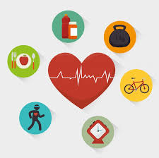
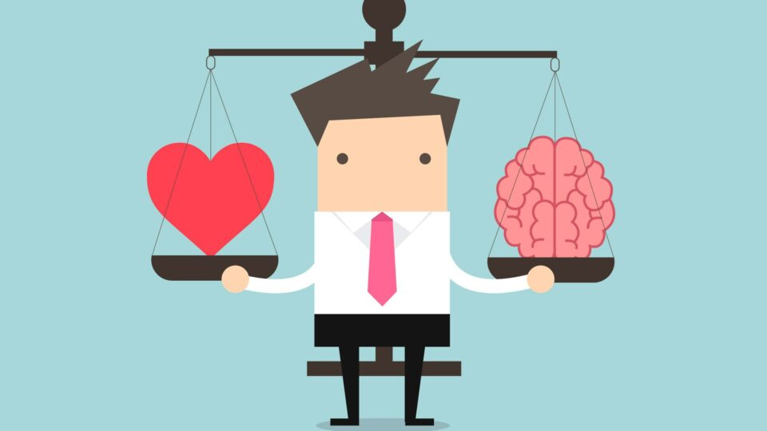

Bienvenido a Salud y Bienestar
Explora consejos de salud, recomendaciones de ejercicios, recetas nutritivas, y recursos de bienestar mental. Nuestra misión es ayudarte a alcanzar un equilibrio en todos los aspectos de tu salud.
Comienza tu viaje saludable
Bienestar

El bienestar no se limita solo a la salud física; abarca la salud emocional y mental. Aquí encontrarás consejos sobre cómo reducir el estrés, mejorar la calidad del sueño, y adoptar hábitos positivos.
Consejos para mejorar el sueño

Un buen descanso es esencial para la salud. Prueba establecer una rutina de sueño, reducir el tiempo frente a pantallas antes de dormir y crear un ambiente oscuro y tranquilo en tu habitación.
- Evita la cafeína después del mediodía
- Realiza ejercicios de respiración o meditación antes de dormir
- Mantén una temperatura agradable en tu habitación
Reducir el Estrés

Controlar el estrés es fundamental para un bienestar integral. Puedes incorporar técnicas como la meditación, el mindfulness o actividades creativas para despejar la mente y recargar energías.
"El estrés es una respuesta natural, pero el manejo adecuado puede transformar cómo nos afecta en la vida diaria."
Fitness

El ejercicio físico no solo mejora tu condición física, sino que también promueve el bienestar mental. Encuentra aquí rutinas de ejercicios para todos los niveles y consejos para mantenerse activo.
Rutinas para Principiantes

Si estás comenzando, opta por ejercicios de bajo impacto como caminatas, estiramientos y ejercicios básicos de fuerza. Aquí tienes una guía sencilla para empezar:
- Caminar 30 minutos al día
- Ejercicios de peso corporal (sentadillas, planchas)
- Ejercicios de flexibilidad y estiramientos
Desafío para Avanzados

Si buscas un desafío, prueba rutinas de alta intensidad y añade pesas a tus entrenamientos. Recuerda siempre calentar antes y estirar después para evitar lesiones.
Alimentación Saludable

Una buena alimentación es la base de una vida saludable. Aquí encontrarás recetas nutritivas, guías para balancear tus comidas y los beneficios de ciertos superalimentos.
Recetas Saludables

Prueba nuestras recetas fáciles y saludables, pensadas para quienes buscan una alimentación balanceada sin complicaciones.
- Ensalada de Quinoa: quinoa, verduras frescas, aguacate y aliño de limón.
- Batido Verde: espinacas, plátano, manzana y leche de almendras.
- Wrap de Pavo: tortillas integrales, pavo, lechuga y hummus.
Beneficios de los Superalimentos

Incorpora alimentos como chia, cúrcuma y bayas en tu dieta. Estos superalimentos están llenos de antioxidantes y nutrientes esenciales para tu salud.
Salud Mental
La salud mental es tan importante como la física. Descubre técnicas de relajación, estrategias para reducir la ansiedad y ejercicios de mindfulness.
Manejo de la Ansiedad

La ansiedad puede ser debilitante, pero existen técnicas que pueden ayudar. Prueba llevar un diario, hacer ejercicio regular y practicar técnicas de grounding.